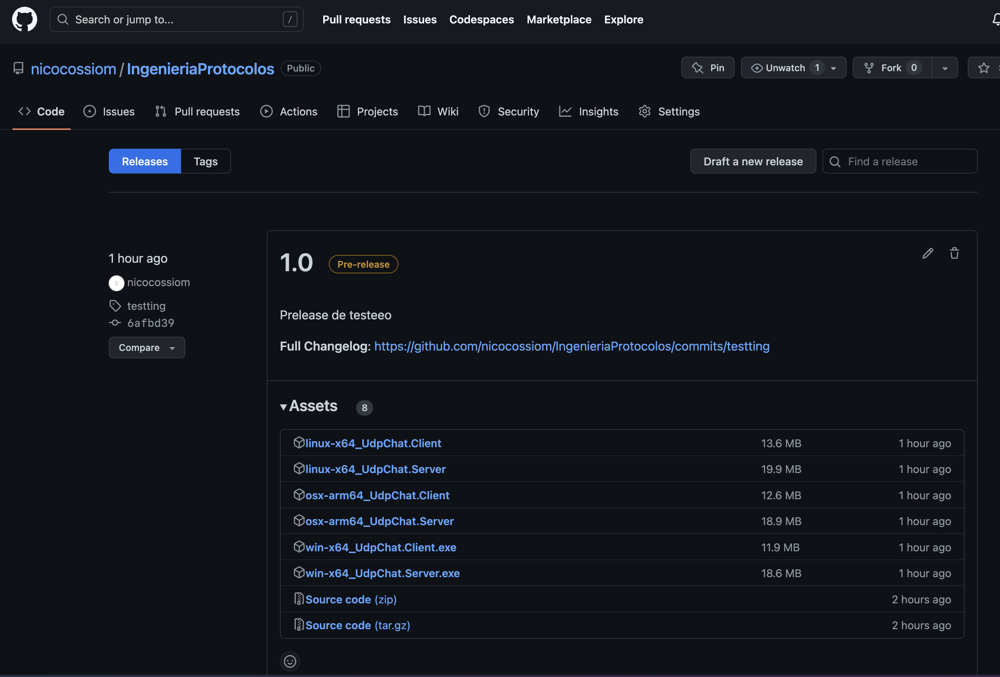

l# Client CLI Documentation
This CLI can be used to interact with a server in otder to register, login, send messages, etc.
Installation
There is no installer. There are 2 ways to get the client CLI:
Binary executable
You can download a binary from the releases page and run it directly. There are binaries for Windowsx64, Linux64 and MacOSarm64.
Go to the releases page on Github to download the latest release.[]

Move the files to a folder of your choice and run the executable.
# Windows
win-x64_UdpChat.Client.exe --help
# MacOSarm64
chmod +x osx-arm64_UdpChat.Client ./osx-arm64_UdpChat.Client --help
# Linux64
chmod +x linux-x64_UdpChat.Client && ./linux-x64_UdpChat.Client --help
> Note: You may need to make the file executable with `chmod +x ./client`